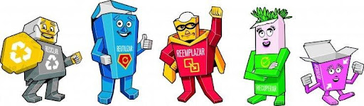
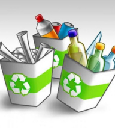
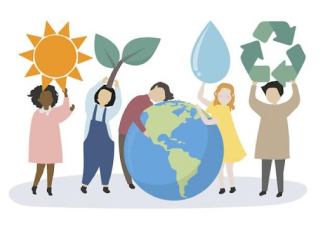
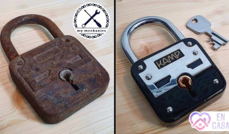
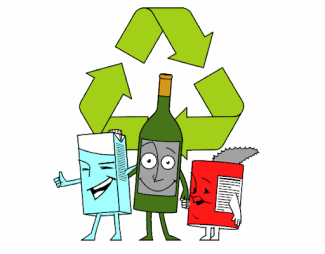
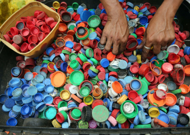

<!DOCTYPE html>
<html><!DOCTYPE html>
  <html lang="es">
    <head>
      <meta charset="UTF-8">
      <meta name="viewport" content="width=device-width, initial-scale=1.0">
      <title>Ecoactualizate</title>
      <link rel="shortcut icon" href="../assets/favicon.ico" type="image/x-icon">
      <link rel="preconnect" href="https://fonts.googleapis.com">
      <link rel="preconnect" href="https://fonts.gstatic.com" crossorigin>
      <link href="https://fonts.googleapis.com/css2?family=Montserrat:wght@200;300;400;500;600;700;800;900&amp;display=swap" rel="stylesheet">
      <meta http-equiv="X-UA-Compatible" content="IE=edge">
      <script defer src="../js/actualizate-item.js" type="module"></script>
      <link rel="stylesheet" href="../css/actualizate-item.css">
    </head>
  </html>
  <body>
    <!-- **************** Navbar **************** -->
        <section class="navbar-light">
              <div class="navbar-container container"><a class="branding" href="../">
                  <h3 class="h3 branding__title">Ecoactualizate</h3></a>
                    <button class="menu-toggler"></button>
                <nav class="nav-menu">
                  <ul>
                    <li><a class="link" href="../">Inicio</a></li>
                    <li><a class="link link--active" href="../actualizate/actualizate.html">Actualizate</a></li>
                    <li><a class="link" href="../noticias/noticias.html">Noticias</a></li>
                    <li><a class="link" href="../nosotros/nosotros.html">Nosotros</a></li>
                  </ul>
                  <div class="nav-menu__button"> <a class="btn btn-primary btn-md" href="../contribuir/contribuir.html">Contribuir</a></div>
                </nav>
              </div>
        </section>
    <!-- **************** Fin Navbar **************** -->
    <!-- ***************************** HEADER *****************************-->
    <!-- ***************************** FIN HEADER ***************************** -->
    <!-- ***************************** MAIN ***************************** -->
    <main>
      <button class="sidebar-toggler"></button>
              <aside class="sidebar">
                <nav class="sidebar-container">
                  <ul>
                    <li class="sidebar__section"><a href="../actualizate/residuos.html">Separacion de residuos</a></li>
                    <li class="sidebar__section sidebar__section--active"><a href="../actualizate/cinco-r.html">Cinco R Ecológicas</a></li>
                    <li class="sidebar__section"><a href="../actualizate/ecodatos.html">Ecodatos</a></li>
                    <li class="sidebar__section"><a href="../actualizate/recicla-en-casa.html">Recicla en casa</a></li>
                  </ul>
                </nav>
              </aside>
          <section class="contents">
            <article class="contents-container">
                  <div class="content__title">
                    <h2 class="h2 bold">Conoce las 5 R Ecológicas</h2>
                    <p class="body light">5 R Ecológicas</p>
                  </div>
                      <div class="block-content">
                        <div class="block-content__image"></div>
                            <h4 class="body extrabold">Reducir, Reparar, Recuperar, Reutilizar y Reciclar</h4>
                            <p>Desde el inicio de la humanidad hemos sido testigos del aumento de desechos a la par de nuestro avance. A lo largo de este tiempo, también hemos aprendido a ir mejorando la huella ecológica que vamos dejando a nuestro paso.</p>
                            <p>Las sociedades humanas siempre han producido residuos, pero es ahora, en la sociedad de consumo, cuando el volumen de las basuras ha crecido de forma desorbitada. Además se ha incrementado su toxicidad hasta convertirse en un gravísimo problema.</p>
                      </div>
                      <div class="block-content">
                        <div class="block-content__image"></div>
                            <h4 class="body extrabold">Reducir</h4>
                            <p>La frase “menos es más” tiene mucho sentido para este punto. Entre menos sean los recursos que demandamos al planeta, mejor será el impacto que le demos.</p>
                            <h4 class="body extrabold">Ejemplo de cómo reducir</h4>
                            <ul>
                              <li>El reducir nuestro consumo derivará invariablemente en los desechos que regresemos al medio ambiente.</li>
                              <li>El realizar menores compras, derivará en menor la basura que generemos.</li>
                              <li>Entre menor sea la carga de nuestro transporte, menor será el gasto de combustible y, con ello, menor contaminación de CO2 que desprende nuestro vehículo.</li>
                              <li>Finalmente, entre menos productos procesados compremos, menor será la contaminación industrial de las fábricas.</li>
                            </ul>
                      </div>
                      <div class="block-content">
                        <div class="block-content__image"></div>
                            <h4 class="body extrabold">Reparar</h4>
                            <p>Si vivimos en una cultura de inmediatez y descarte, lo más seguro es que reparar algo sea lo último en que pensemos. El significado de reparar consiste en realizar cambios necesarios a una cosa que está estropeada para regresarle su utilidad original.</p>
                            <h4 class="body extrabold">Ejemplo de cómo reparar</h4>
                            <ul>
                              <li>Un auto que se descompone no se tira se repara. Este mismo principio debería regir el resto de las cosas que se averían.</li>
                              <li>Una casa que tiene una grieta tampoco se vende, se repara. Quizás la constante es el valor de las cosas: sale más barato reparar que volver a comprar.</li>
                              <li>Lo mismo debe pasar con las cosas que vienen de origen natural. Quizás, si supiéramos lo que cuesta obtener cada recurso natural le diéramos más valor a estos recursos.</li>
                            </ul>
                      </div>
                      <div class="block-content">
                        <div class="block-content__image"></div>
                            <h4 class="body extrabold">Recuperar</h4>
                            <p>Recuperar quiere decir que algo se puede volver a poner en servicio pero no necesariamente está averiado, por lo tanto no requiere reparación sino una recuperación. Sin duda alguna los ejemplos siguientes lograrán diferenciar recuperar de reparar.</p>
                            <h4 class="body extrabold">Ejemplo de cómo recuperar</h4>
                            <ul>
                              <li>Una computadora que se compró hace un tiempo puede quedar demasiado lenta para su uso normal. Si se actualizan algunos componentes del equipo se podrá recuperar su velocidad y con ello su utilidad.</li>
                              <li>Los frenos de un auto en el tiempo se van desgastando y generan un sonido característico de ese desgaste. El freno continúa funcionando pero requiere de ajustes para recuperar sus características de uso óptimo, es decir, el freno desgastado funciona aún desgastado; no requiere reparación pero si algún ajuste.</li>
                            </ul>
                      </div>
                      <div class="block-content">
                        <div class="block-content__image"></div>
                            <h4 class="body extrabold">Reutilizar</h4>
                            <p>Dicen que la basura de uno, es el tesoro de otro. El significado de reutilizar es que lo que, aparentemente es basura, se puede convertir en algo con un nuevo uso. El grado de reutilización de las cosas depende de su forma, tamaño, material y, en algunos casos, del costo.</p>
                            <h4 class="body extrabold">Ejemplo de cómo reutilizar</h4>
                            <ul>
                              <li>El reutilizar tiene su valor en el ahorro que brinda dar un nuevo uso a algo y evitar crear basura o residuos.</li>
                              <li>Las cámaras de llanta se reutilizan en la fabricación de calzado.</li>
                              <li>Algunos desechos metálicos se reutilizan en la creación de arte urbano.</li>
                            </ul>
                      </div>
                      <div class="block-content">
                        <div class="block-content__image"></div>
                            <h4 class="body extrabold">Reciclar</h4>
                            <p>Reciclar significa que un producto que ha cumplido su vida útil debe regresar a la cadena de producción como insumo para dar vida a un nuevo producto. que ya ha pasado por el proceso de producción como materia prima. Reciclar es un ejercicio muy importante y pudiera parecer complejo pero no hay nada más alejado de la realidad.</p>
                            <h4 class="body extrabold">Ejemplo de cómo reciclar</h4>
                            <ul>
                              <li>El reciclaje inicia en casa, desde muy temprana edad y debe ser algo innato en cada individuo para lograr vivirlo con todo y en cada momento en busca de la sostenibilidad.</li>
                              <li>El papel y cartón es uno de los materiales más utilizados para el reciclaje con lo cual se reduce la necesidad una mayor tala de árboles.</li>
                              <li>Los materiales de pet son otros de los materiales más reciclados en sus diversas formas y tamaños. Se estima que hoy en día hay más plástico en el mar que animales marinos.</li>
                              <li>El vidrio es otro de los materiales más utilizados en la industria del reciclaje. Es un material muy noble y con características para darle un nuevo uso.</li>
                            </ul>
                      </div>
            </article>
          </section>
      <button class="scroll-top-btn"></button>
    </main>
    <!-- ***************************** FIN MAIN ***************************** -->
    <!-- ***************************** FOOTER ***************************** -->
    <footer>
            <section class="footer">
              <div class="footer-container container">
                <div class="footer-social">
                  <h3 class="h3 h3-upper extrabold">EL FUTURO NO ES DESECHABLE</h3>
                  <div class="footer-social__container"><a href="https://api.whatsapp.com/send?phone=3002047922"></a><a href="mailto:sofiatobon2020@gmail.com"></a></div>
                </div>
                <div class="footer-branding"><a class="footer-branding__container" href="#">
                    <p class="body bold">Ecoactualizate</p></a><a class="btn btn-primary btn-sm" href="../contribuir/contribuir.html">Contribuir</a></div>
              </div>
            </section>
    </footer>
    <!-- ***************************** FIN FOOTER ***************************** -->
  </body>
</html>